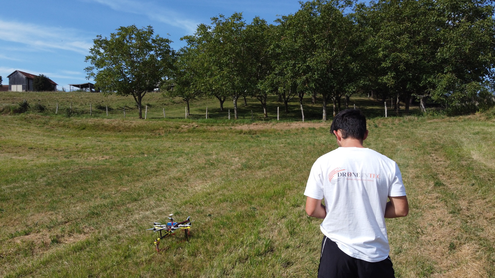
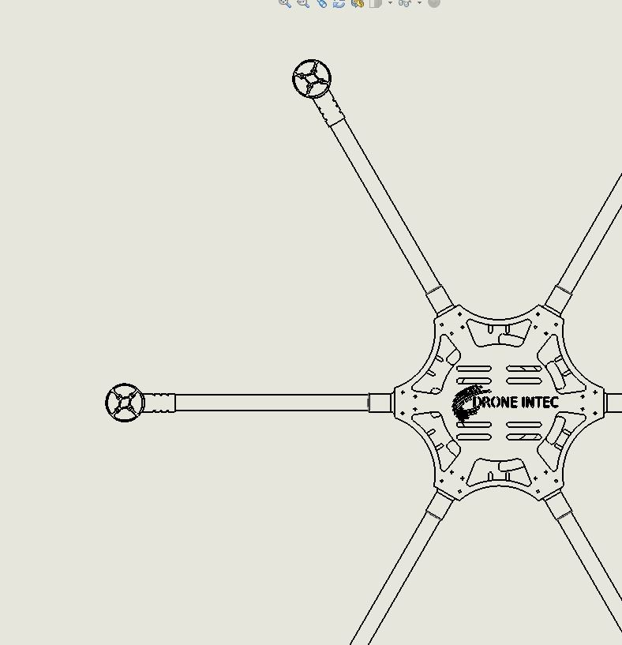
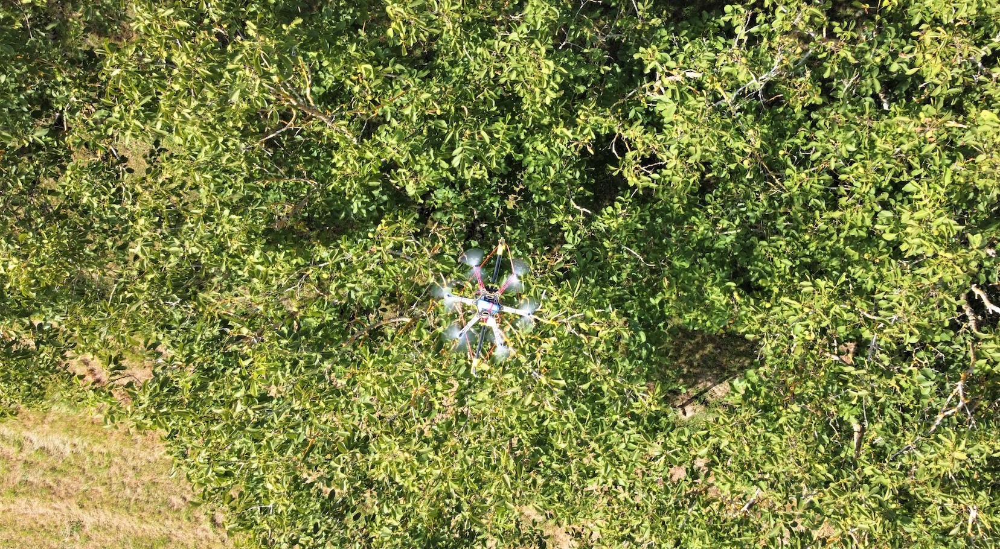
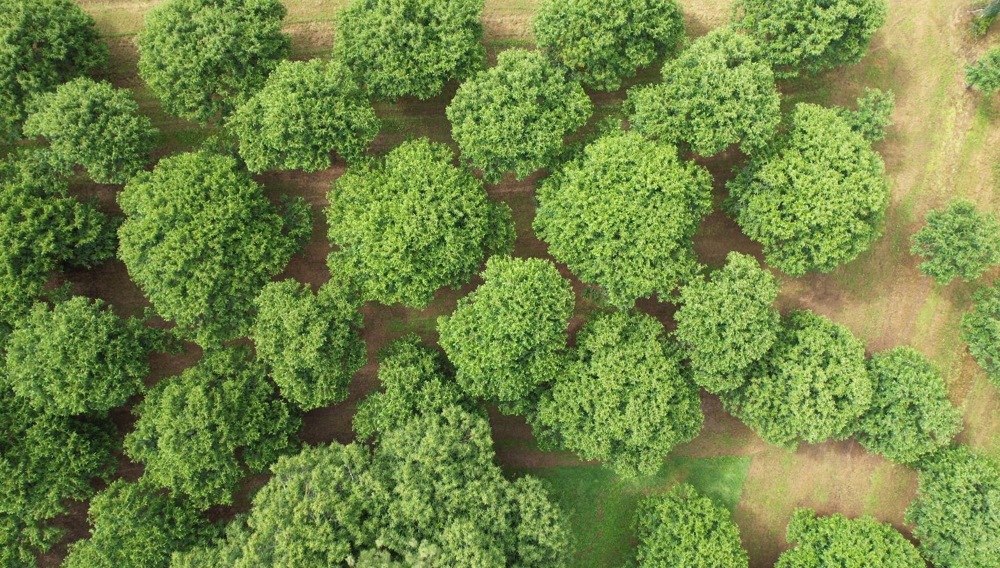
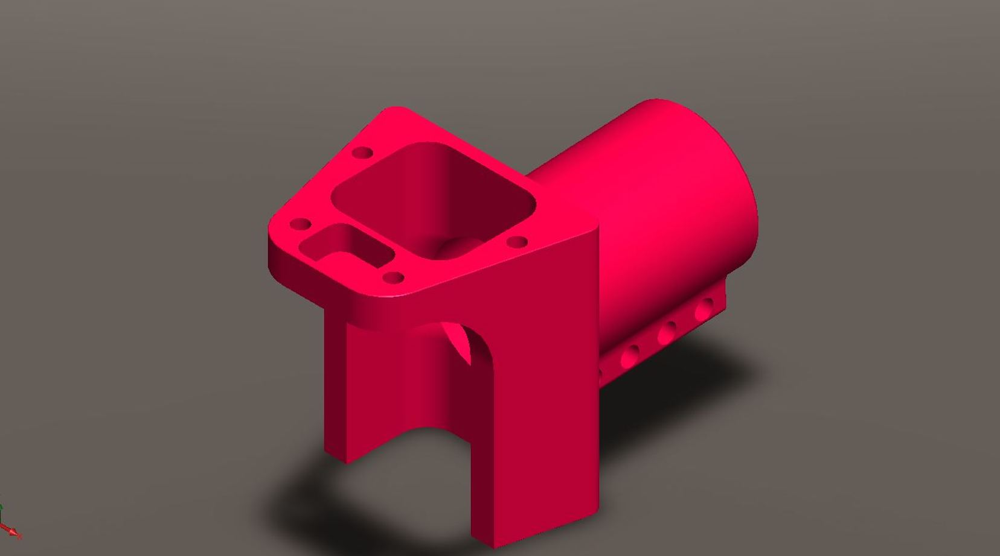
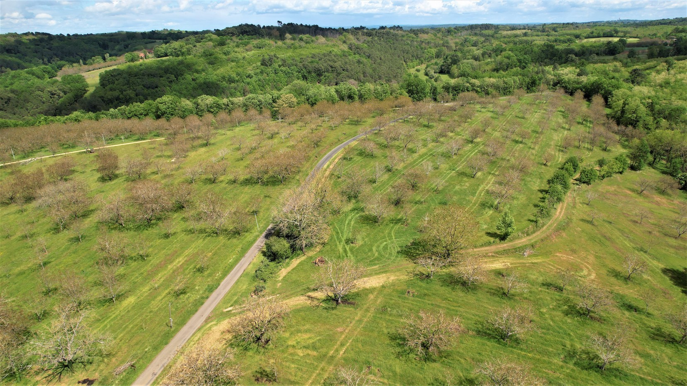
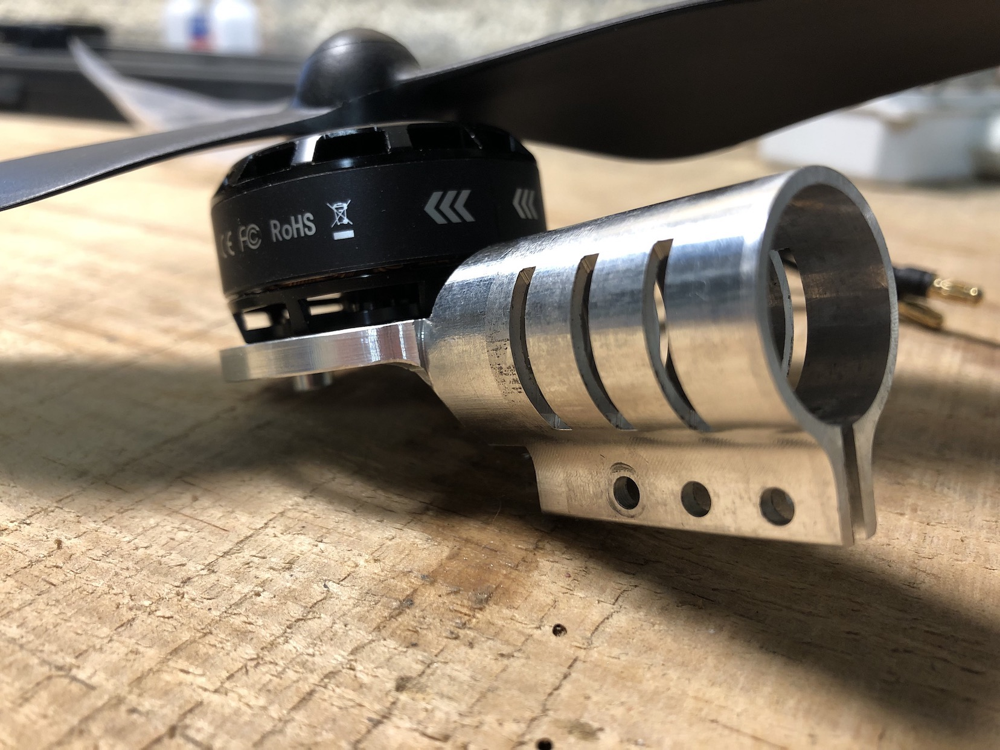
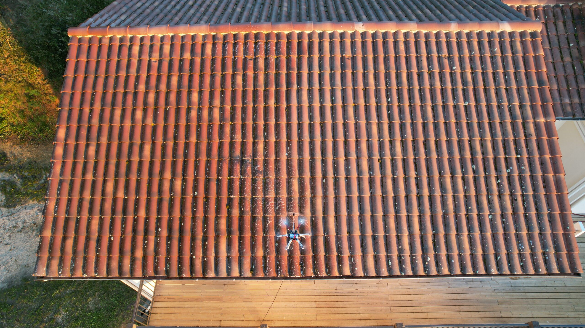
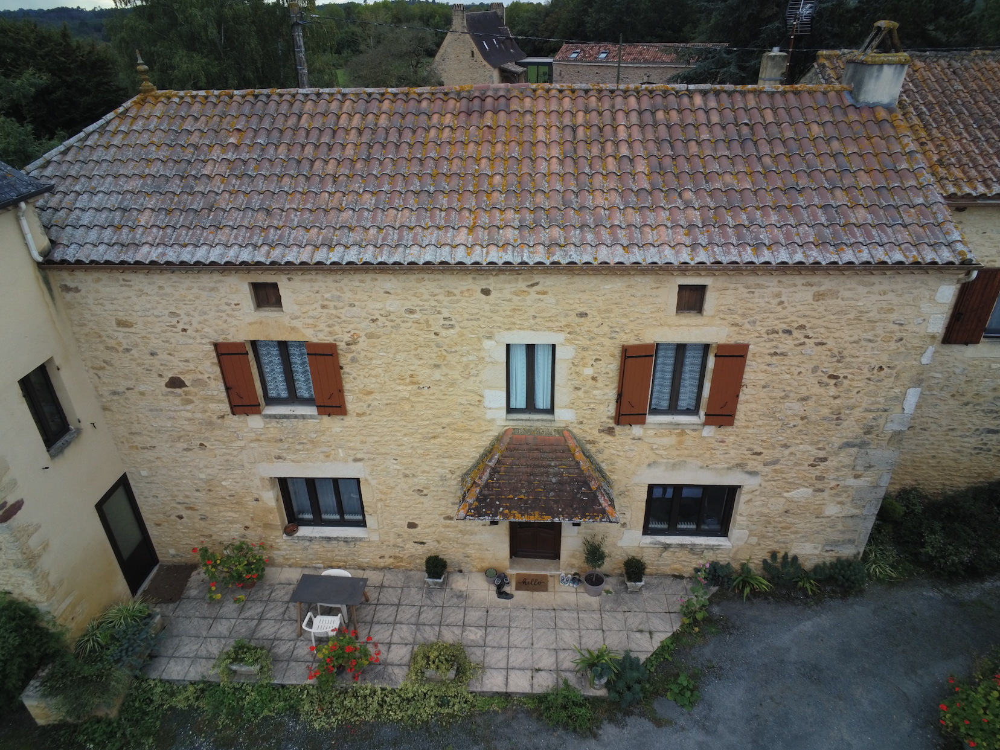
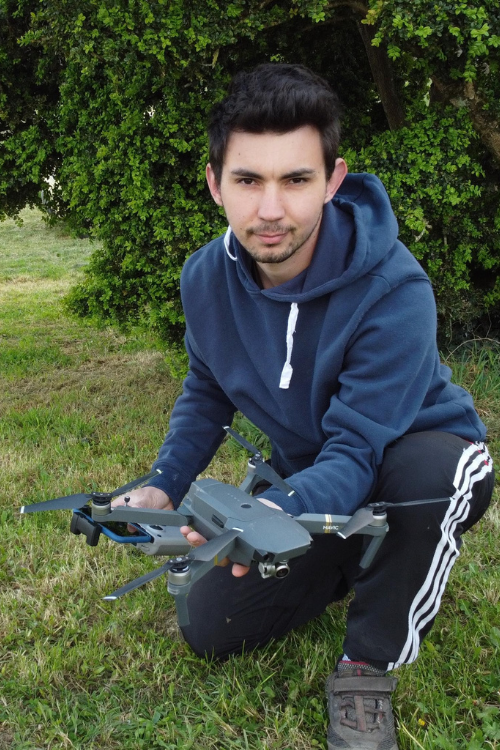

Agriculture technique • Serres agricoles • Drones sur mesure
Des drones conçus pour les missions agricoles qui demandent plus que de belles images.
Drone Intec imagine, adapte et déploie des solutions aériennes pour la pose de GINKO®Ring, le blanchiment et déblanchiment de serres et la conception sur mesure de drones techniques.

Pose GINKO®Ring, opérations en serres et missions utiles pensées pour le rythme réel de l'exploitation.
Un message plus direct, centré sur les vraies spécialités.
- Pose de dispositifs GINKO®Ring
- Blanchiment et déblanchiment de serres agricoles
- Conception de drones sur mesure

Atelier technique
Conception sur mesure
Étude, adaptation et prototypage autour d'un besoin métier précis.
Positionnement recommandé pour le futur site
Solutions drone pour vergers & serres
Conception et adaptation en interne
Prestation terrain, technique et locale
Les expertises à mettre en avant
Un site pensé pour vendre des missions utiles, pas seulement des images.
La homepage met le cap sur les activités à plus forte valeur: l'intervention agricole technique et la fabrication de solutions drone adaptées à un besoin précis.

Agriculture
Pose de dispositifs GINKO®Ring
Valoriser le gain de temps, la précision d'application et la réduction de pénibilité pour les arboriculteurs.
- Intervention ciblée dans les vergers
- Mise en avant du geste technique
- Promesse claire pour les exploitations

Serres agricoles
Blanchiment & déblanchiment
Présenter Drone Intec comme un partenaire de terrain pour des opérations saisonnières sensibles et répétitives.
- Application homogène
- Moins d'accès difficiles
- Organisation simple pour l'exploitant

Atelier technique
Conception de drones sur mesure
Montrer la différence entre un prestataire drone et un acteur capable de concevoir l'outil adapté à la mission.
- Étude du besoin
- Conception, assemblage, prototypage
- Réponse à des usages spécifiques
Services détaillés
Chaque activité mérite une vraie page de présentation, avec ses images et ses explications.
Cette section remplace l'encadré trop abstrait par une vraie lecture de service: présentation, cas d'usage, bénéfices métier et photos issues du site officiel.
Pôle principal
Agriculture technique
Des interventions utiles à l'exploitation, conçues pour gagner du temps sur le terrain et renforcer la précision d'exécution.

Repères clés
Photos officielles liées à cette activité
Sélection de visuels issus du site original.
Réalisations & ambiance
Un langage visuel plus premium, plus technique et plus vivant.




Méthode
Le site doit rassurer autant qu'il doit impressionner.
Comprendre la mission
Type de culture, contraintes d'accès, saison, cadence, précision attendue, réglementation et sécurité.
Adapter l'outil
Choix du drone, ajustements matériels, organisation du vol et préparation de l'intervention.
Intervenir proprement
Exécution fluide, visibilité sur le chantier et communication simple avec l'exploitant ou l'entreprise.
Laisser une trace claire
Compte-rendu, images, recommandations ou suite à donner selon le type de prestation.
À propos
Une présence locale, une approche artisanale, un vrai angle technique.
Ce mockup recentre Drone Intec sur ce qui le différencie vraiment: la compréhension du terrain agricole, la capacité à intervenir sur des usages exigeants et la possibilité de concevoir un drone autour d'un besoin.
La partie “À propos” peut ensuite être enrichie avec le parcours d'Aurélien, les références d'intervention, la zone couverte et les garanties réglementaires.

Contact
Une section contact simple, rassurante et prête pour un vrai backend plus tard.
Pour l'instant, le formulaire est un mockup fonctionnel côté interface. Il valide les champs, simule l'envoi et affiche un retour utilisateur sans connecter de service externe.